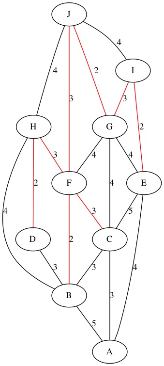
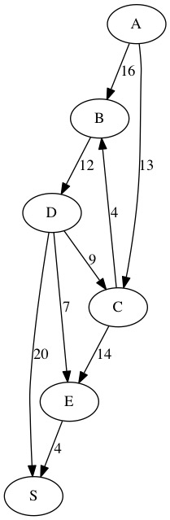
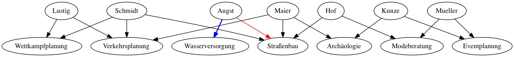

Jovan Gerodetti - AINF 2014 - ALGODAT - Die Probleme der Graphschaft Schilda
Die Probleme der Graphschaft Schilda
1) Straßen müssen her!
Graph

Kruskal
Schritt 1
Schritt 2

Schritt 3

Schritt 4
Schritt 5

Schritt 6
Schritt 7

Schritt 8

Ergebniss
2) Wasserversorgung
Ford-Fulkerson
Schritt 1
Schritt 2
Schritt 3

Schritt 4
Schritt 5
Schritt 6
Ergebniss
Ja der Supermarkt kann mit den benötigten 22m^2 Wasser versorgt werden.
1) Historische Funde
Graph
Breitensuche
Schritt 1

Schritt 2

Schritt 3

Schritt 4
Schritt 5
Schritt 6
Schritt 7

Schritt 8

Schritt 9
Schritt 10
Ergebniss
Reihenfolge:
1) A
2) C
3) B, E
4) H
5) D
6) F
7) G
4) Wohin nur mit den Gästen?
Graph

Ford-Fulkerson
Schritt 1
Schritt 2
Ergebniss

5) Es gibt viel zu tun!
Graph
Schritt 1

Schritt 2

Schritt 3

Schritt 4

Schritt 5

Schritt 6

Schritt 7

Ergebniss
| Name | Projekt |
|---|---|
| Herr Maier | Archäologie |
| Frau Müller | Modeberatung |
| Frau Augst | Wasserversorgung |
| Frau Schmidt | Verkehrsplanung |
| Herr Kunze | Eventplanung |
| Herr Hof | Straßenbau |
| Frau Lustig | Wettkampfplanung |